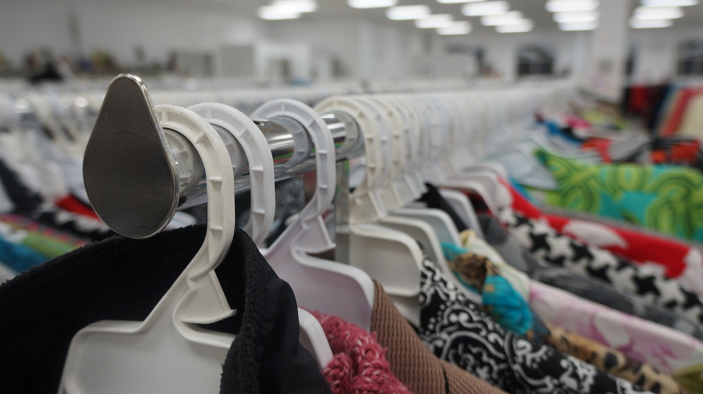
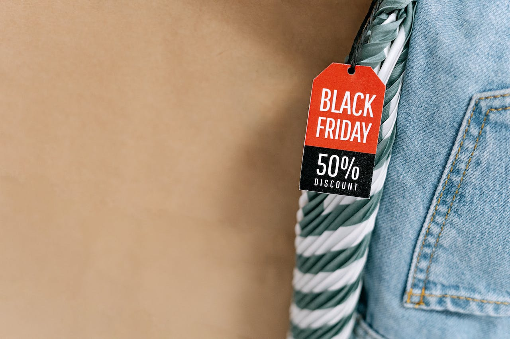
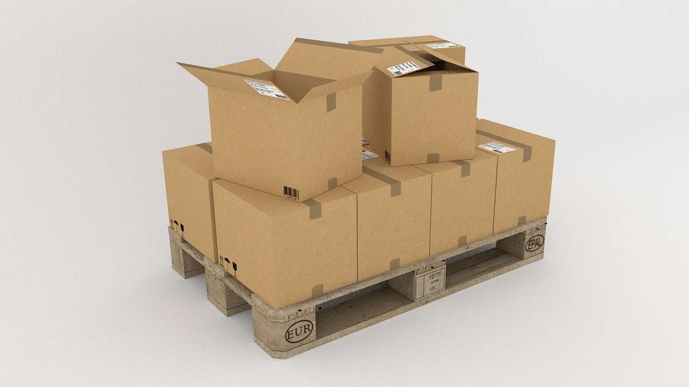

What is Being Frugal:
Being frugal refers to the practice of being careful with money and resources, avoiding unnecessary expenses, and making wise financial decisions. It involves living within one's means, prioritizing needs over wants, and seeking ways to save money without compromising on quality or essential aspects of life.
Frugal individuals often budget, compare prices, look for discounts or deals, minimize waste, and make thoughtful choices to stretch their resources further. The aim is to be mindful of spending and ensure long-term financial stability.
Why it Matters:
Being frugal and smart with your purchases matters financially for several reasons:
Saving money:
By practicing frugality, individuals can save a significant amount of money over time. This saved money can be used for emergencies, investments, paying off debt, or achieving financial goals such as buying a house, starting a business, or retiring comfortably.
Debt reduction:
Frugality can help individuals avoid or reduce debt. By carefully managing their finances and spending within their means, frugal individuals are less likely to rely on credit cards or loans to make ends meet. This can prevent the accumulation of high-interest debt, which can be financially burdensome.
Financial stability:
Being frugal promotes financial stability by creating a cushion of savings and reducing the risk of financial stress. When unexpected expenses arise, frugal individuals are better equipped to handle them without derailing their financial situation.
Long-term wealth building:
Consistently practicing frugality allows individuals to accumulate wealth over time. By saving and investing wisely, they can grow their assets and create a solid foundation for their financial future.
Increased financial freedom:
Being frugal gives individuals more control over their finances and increases their overall financial freedom. It provides the flexibility to make choices based on personal preferences and goals, rather than being limited by financial constraints.
Overall, being frugal matters financially because it promotes financial well-being, helps individuals reach their financial goals, and provides a sense of security and freedom in managing their money.
Top Things to Consider:
When trying to become more frugal, here are some key things to consider:
Budgeting:
Create a budget to track your income and expenses. It helps you understand where your money is going and allows you to allocate funds wisely, ensuring you live within your means.
Differentiate between needs and wants:
Distinguish between essential expenses (needs) and discretionary spending (wants). Prioritize your needs and be mindful of your wants, cutting back on unnecessary purchases.
Comparison shopping:
Compare prices, shop around, and look for deals before making a purchase. This can help you find the best value for your money and save on everyday items or big-ticket purchases.
Minimize impulse buying:
Avoid impulsive purchases by practicing delayed gratification. Give yourself time to think about whether you truly need or want the item before making a purchase. This can help prevent unnecessary spending.
Reduce recurring expenses:
Analyze your recurring expenses, such as subscriptions, memberships, or services, and evaluate if they align with your priorities. Consider canceling or downsizing those that you don't fully utilize or that don't provide enough value.
Plan meals and cook at home:
Eating out frequently can be expensive. Plan your meals, create a grocery list, and cook at home more often. This allows you to save money, eat healthier, and have better control over your food expenses.
Embrace frugal habits:
Adopt frugal habits like using coupons, shopping at thrift stores, utilizing the library instead of buying books, repairing items instead of replacing them, and finding low-cost or free entertainment options. Small changes in daily habits can add up to significant savings over time.
Focus on quality and value:
While being frugal involves saving money, it doesn't mean sacrificing quality. Prioritize value for your money by choosing durable, long-lasting products and services that offer the best combination of quality and affordability.
Energy and resource conservation:
Be mindful of your energy and resource usage to save on utility bills. Turn off lights when not in use, unplug electronics, use energy-efficient appliances, and conserve water. These practices benefit both your wallet and the environment.
Regularly review and adjust:
Continually review your financial situation, assess your progress, and adjust your frugal strategies as needed. As your circumstances change, you may need to adapt your approach to maintain financial stability and meet your goals.
Remember, being frugal is a personal journey, and everyone's circumstances and priorities may differ. Find the strategies that work best for you and align with your financial goals and values.
Buying Used:
Buying used items instead of new can be financially beneficial in several ways:
Lower upfront cost:
Used items are typically priced lower than their new counterparts. By purchasing used, you can often get the same or similar functionality at a fraction of the cost, allowing you to save money upfront.
Reduced depreciation:
Many items lose a significant portion of their value shortly after purchase. By buying used, you avoid the initial depreciation that occurs when an item transitions from new to used. This means that if you decide to sell the item later, you may be able to recoup a larger portion of your investment.
Access to higher-quality items:
Buying used can sometimes allow you to afford higher-quality items that may have been out of your price range when new. This can be particularly beneficial when purchasing durable goods like furniture, appliances, or vehicles, where the quality and longevity of the item matter.
Lower insurance costs:
In certain cases, insurance costs may be lower for used items compared to new ones. For example, the insurance premiums for a used car are often lower than for a new car, which can result in long-term savings.
Environmentally friendly:
Buying used items promotes sustainability by reducing the demand for new products and decreasing the environmental impact associated with manufacturing, packaging, and transportation.
It's important to note that when buying used items, it's advisable to exercise caution and ensure the item is in good condition and meets your needs. Additionally, some products may not be suitable for purchasing used, such as certain personal hygiene items or items with safety concerns. However, for many other categories of goods, buying used can be an excellent way to save money without compromising on quality or functionality.
Coupons:
Coupons can be a helpful tool for saving money and improving your financial situation in several ways:
Discounts on purchases:
Coupons offer discounts on the products or services you regularly buy. By using coupons, you can lower the cost of items, ranging from groceries and household supplies to clothing, electronics, and more. This immediate reduction in price can result in significant savings over time.
Maximizing purchasing power:
Coupons allow you to stretch your budget and maximize your purchasing power. By using coupons strategically, you can buy more with the same amount of money or stay within your budget while still getting the items you need or want.
Extra savings on sale items:
Coupons can often be used in combination with sales or promotional offers, allowing you to maximize your savings. This means you can take advantage of discounted prices on products and then apply additional coupons to further reduce the cost.
Discovering new products:
Coupons can encourage you to try new products or brands by offering introductory discounts. This can be an opportunity to explore different options while still enjoying savings. It might even lead you to find less expensive alternatives that work just as well as your usual choices.
Budget optimization:
By using coupons, you can allocate your budget more effectively. Saving money on one item allows you to redirect those funds towards other needs or savings goals. This flexibility helps you maintain a balanced budget and make the most of your available resources.
Building stockpile or reserves:
When you find coupons for non-perishable or long-lasting items, you can use them to build up a stockpile or reserves. This approach can be particularly useful for items like toiletries, cleaning supplies, or shelf-stable pantry items. Having a stockpile can save you money in the long run by reducing the need for last-minute purchases at higher prices.
Remember to check the terms and conditions of the coupons, including any limitations, expiration dates, or restrictions on use. Additionally, it's essential to avoid falling into the trap of buying items solely because of the coupon if you don't genuinely need or want them. Using coupons wisely and selectively can contribute to your financial well-being and help you make the most of your money.
Material Items:
Being frugal doesn't mean completely avoiding buying material items. It's about making informed decisions and being mindful of your spending to ensure that your purchases align with your priorities and financial goals. Here are some considerations when buying material items while practicing frugality:
Need vs. Want:
Before making a purchase, ask yourself if the item is something you genuinely need or if it's more of a want or desire. Focus on fulfilling your needs first and carefully evaluate the value and utility of the item in question.
Research and comparison:
Take the time to research the item you want to buy and compare prices across different sellers or platforms. Look for discounts, sales, or promotions that can help you get a better deal. Being an informed shopper can save you money and ensure you get the best value for your purchase.
Quality and durability:
Consider the quality and durability of the item you intend to buy. Investing in well-made, durable products might initially cost more, but they can save you money in the long run by lasting longer and requiring fewer replacements or repairs.
Second-hand or pre-owned options:
Explore second-hand or pre-owned markets when appropriate. Buying used items can often provide substantial savings without sacrificing quality. Websites, thrift stores, garage sales, and online marketplaces can be great sources for finding gently used items at a fraction of the original price.
Prioritize essential purchases:
Make sure to prioritize essential purchases that contribute to your well-being, safety, or personal growth. Allocate your resources to items that fulfill your basic needs, such as food, shelter, healthcare, and education, before considering discretionary purchases.
Delayed gratification:
Practice delayed gratification by giving yourself time to think about a purchase before committing to it. This can help you avoid impulsive buying and ensure that the item is something you truly want or need.
Consider long-term value:
Evaluate the long-term value and usefulness of the item. Will it serve you well over time, or is it likely to become obsolete or lose its appeal quickly? Investing in items with lasting value can be a wise choice from a frugal perspective.
Remember, being frugal doesn't mean depriving yourself of material items altogether. It's about making conscious choices, spending your money wisely, and finding a balance between your needs, wants, and financial goals.
Name Brand Items:
When deciding between brand name and generic items, it's important to recognize that buying brand name doesn't always guarantee more value. Here are a few reasons why:
Brand premium:
Brand name items often come with a higher price tag due to the reputation, marketing, and brand recognition associated with them. This brand premium doesn't always translate to superior quality or functionality. Generic items can provide comparable performance at a lower cost.
Quality equivalence:
Many generic products undergo rigorous testing and adhere to the same quality standards as brand name items. Regulatory bodies often require generic versions to meet the same specifications and safety requirements. In some cases, the manufacturing of brand name and generic products may even be done by the same company.
Cost savings:
Opting for generic items can lead to significant cost savings. By choosing generic alternatives, you can allocate your budget more efficiently, potentially freeing up funds for other essential expenses or savings goals. This approach allows you to get more value for your money.
Similar ingredients or composition:
In sectors like pharmaceuticals or food products, generic versions often contain the same active ingredients or have similar compositions to their brand name counterparts. They are required to meet the same standards for safety and efficacy. It's crucial to check the ingredients or specifications to ensure they align with your needs.
Individual preferences:
Personal preference plays a role in purchasing decisions. While some individuals may have a strong attachment to specific brand name items based on familiarity or marketing influence, others may find that generic items meet their needs equally well. It's subjective and varies from person to person.
Customer reviews and recommendations:
Consulting customer reviews and recommendations can provide valuable insights into the quality and performance of generic items. Learning from others' experiences can help you make informed decisions and identify which products offer the best value.
It's worth noting that there may be instances where brand name items offer unique features, exceptional craftsmanship, or specialized functionality that justifies the higher price. However, for many everyday products, generic alternatives can provide excellent value without compromising on quality. Being frugal means carefully considering your options and making choices that align with your needs, priorities, and budget.
Waiting For Discounts:
Being frugal often involves waiting for discounts or sales before making a purchase. This approach can offer several benefits:
Cost savings:
Waiting for discounts allows you to purchase items at a lower price, saving you money. Retailers frequently offer sales, promotions, or seasonal discounts, providing an opportunity to secure better deals and maximize your purchasing power.
Budget optimization:
By strategically timing your purchases, you can align them with your budget and financial goals. Waiting for discounts allows you to allocate your funds more effectively, ensuring that you have the necessary resources to cover your essential expenses while still taking advantage of discounted prices.
Avoiding impulse buying:
Waiting for discounts helps you avoid impulsive purchases. It provides a cooling-off period that allows you to reflect on whether you truly need or want the item. This can prevent regrettable purchases and ensure that your spending aligns with your needs and priorities.
Value assessment:
Waiting for discounts gives you an opportunity to assess the value of the item you wish to purchase. If the item goes on sale, it can be an indication that its original price may have been inflated or that the market is more competitive, leading to better pricing. This gives you a chance to evaluate the item's worth more objectively.
Patience and delayed gratification:
Practicing patience by waiting for discounts cultivates a mindset of delayed gratification. It allows you to prioritize long-term financial goals and exercise discipline in your spending habits. The satisfaction of getting a good deal after patiently waiting can be rewarding.
Research and comparison:
While waiting for discounts, you can conduct research and compare prices across different sellers or platforms. This enables you to make more informed decisions about where to buy the item and find the best price. It also provides an opportunity to explore alternatives and potentially discover better deals or alternatives.
It's important to note that waiting for discounts is not always feasible or appropriate for time-sensitive needs or essential purchases. Additionally, not all items go on sale or receive significant discounts. Exercise discretion and assess whether the potential savings justify the waiting period for each specific purchase.
Buying In Bulk:
Buying in bulk can be a smart strategy when practicing frugality for several reasons:
Cost savings:
Purchasing items in bulk often results in a lower cost per unit. Retailers and wholesalers often offer discounts or special pricing for larger quantities. By buying in bulk, you can take advantage of these savings and reduce your overall expenses over time.
Reduced per-unit packaging costs:
Buying in larger quantities can help minimize packaging costs. When you purchase individual or smaller-sized items, you often pay a premium for the packaging and marketing involved. Bulk purchases eliminate the need for excessive packaging, allowing you to save on those costs.
Convenience and time savings:
Buying in bulk reduces the frequency of shopping trips since you have a larger supply of the items you regularly use. This saves you time and effort spent on frequent store visits. It can also be particularly beneficial for items with a longer shelf life, such as non-perishable goods or household essentials.
Stockpile for future needs:
Buying in bulk allows you to build a stockpile of essential items. This can be particularly useful for products that you use consistently or items with predictable consumption patterns. Having a stockpile ensures that you won't run out of necessary items and can help you avoid last-minute purchases at higher prices.
Potential for long-term savings:
By buying in bulk, you may be able to lock in lower prices for an extended period. This can be advantageous if you anticipate price increases in the future or if the item is subject to price fluctuations. It provides a sense of stability and potentially shields you from future price hikes.
Storage space:
Purchasing in bulk requires adequate storage space. Ensure that you have enough room to store the items properly, keeping in mind any special storage requirements or shelf life considerations.
Consumable items:
Only buy in bulk for items you know you will use before they expire. Avoid purchasing perishable goods or items with a limited shelf life in excessive quantities, as it may lead to waste and negate the cost savings.
Budget planning:
While buying in bulk can offer cost savings, it's essential to plan your budget accordingly. Ensure that you have the upfront funds available to make bulk purchases without compromising your ability to cover other essential expenses.
Overall, buying in bulk can be a frugal strategy when done wisely. It allows you to take advantage of cost savings, reduce packaging waste, and build a supply of items you regularly use. Consider your needs, storage capacity, and budget before deciding to buy in bulk.
Being Too Frugal
It is possible to take frugality to an extreme where it becomes detrimental to one's well-being or quality of life. Here are a few considerations:
Sacrificing essential needs:
Being excessively frugal can lead to sacrificing essential needs such as nutritious food, healthcare, or safe living conditions. It's important to prioritize your health, safety, and well-being over strict adherence to frugality.
Neglecting investments in personal growth:
Spending very little on personal development, education, or skills improvement may limit future opportunities and career advancement. It's crucial to strike a balance between saving money and investing in yourself to enhance your long-term earning potential.
Damaging relationships:
Extreme frugality can strain relationships if it leads to constant refusal of social activities, never contributing to shared expenses, or being overly rigid about money matters. It's important to find a balance that respects your financial goals without isolating yourself or alienating loved ones.
Missing out on experiences:
Being excessively frugal might cause missed opportunities for enjoyable experiences, travel, or personal enrichment. While it's essential to be mindful of spending, denying oneself every experience can hinder personal growth and limit life's richness.
Diminishing quality of life:
Constantly focusing on cutting costs may result in a diminished quality of life if it means consistently settling for lower-quality products, forgoing leisure activities, or depriving oneself of small pleasures. Happiness and well-being should be considered alongside financial considerations.
Frugality is about making conscious choices to manage your finances effectively and prioritize your resources. It's important to strike a balance between saving money and enjoying a fulfilling life. Assess your financial goals, needs, and values to find the right level of frugality that aligns with your overall well-being and long-term financial stability.